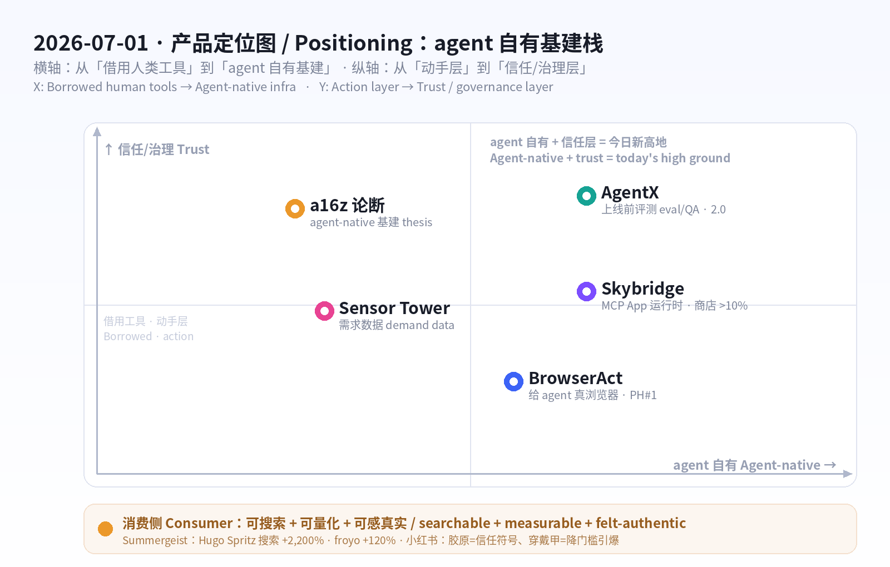
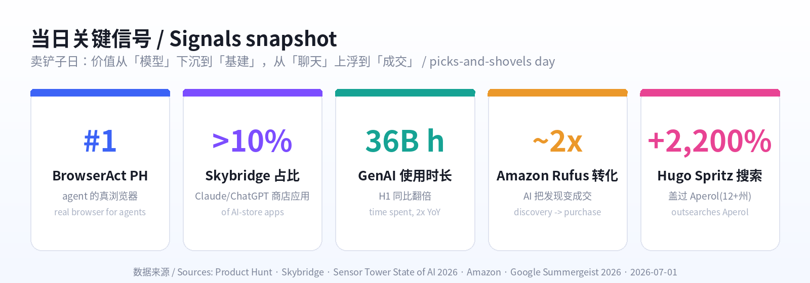

数据来源 / Sources: Product Hunt（BrowserAct 6/25 当日第一、Skybridge、AgentX 2.0、Propane、Upstream）、Hacker News（6 月：从「炫技」转向信任/安全/可控）、a16z《Big Ideas 2026》（agent-native infrastructure）、Sensor Tower《State of AI 2026》（用量翻倍、AI 成为购物新入口）、Google《Summergeist 2026》（Hugo Spritz、jelly slides、froyo）、Amazon 夏季爆款、小红书（胶原 / 穿戴甲 / 效果化时代，NielsenIQ×小红书健康白皮书）。 方法 / Method: WebSearch + web_fetch 抓取公开数据。X / LinkedIn / 小红书 / Sensor Tower / Product Hunt 多为登录或客户端渲染，采用公开检索摘要与新闻/新闻稿替代；BrowserAct 的 GlobeNewswire 新闻稿页返回空壳（客户端渲染），改用检索摘要。为保证每日新意，已排除 6/12–6/29 已深度分析过的产品（Fundraisly、Slashy、Vokal、Goldfish、Minimi、Framer 3.0、OpenCode、BlitzGraph、Wispr Flow、Lyto、MY AI Agent、NeuralTrust、fibermaxxing、观鸟/鸟门 等）。 免责声明 / Disclaimer: 本报告为趋势研究，非投资建议。涉及融资/估值/排名/下载与收入为第三方公开披露或估算，可能随时变化。
一句话 / In one line： 6 月 29 日的主线是「agent 从『说』到『做』，于是信任成了产品界面」；今天的主线是「agent 不再借用人类的工具——它开始拥有自己的基建」。 今天是 agent 时代的「卖铲子日」：给 agent 一个真正的浏览器（BrowserAct 拿下 Product Hunt 当日第一）、给 agent 应用一个原生运行时（Skybridge 把 MCP App 写进 ChatGPT/Claude）、给 agent 一套质检与评测层（AgentX）。这正中 a16z《Big Ideas 2026》的判断：流量正从「人速」转向「agent 速」——递归、突发、海量；而 Sensor Tower 用数据证明需求是真的：GenAI 使用时长同比翻倍，AI 正成为「购物的新入口」。
Where June 29 was "agents go from talking to doing, so trust becomes the product surface," today's throughline is "agents stop borrowing human tools and start owning their own infrastructure." It's the picks-and-shovels day for the agentic web: give agents a real browser (BrowserAct hit #1 Product of the Day), give agent-apps a native runtime (Skybridge ships MCP Apps inside ChatGPT/Claude), and give agents a QA + eval layer (AgentX). It maps cleanly onto a16z's Big Ideas 2026 call — traffic is shifting from human-speed to agent-speed (recursive, bursty, massive) — and Sensor Tower proves the demand is real: GenAI time spent more than doubled YoY, and AI is becoming "the new front door to shopping."
三股力量在同一天交汇 / Three forces converge today:
消费侧延续「可搜索、可量化、可感真实」逻辑：欧美由 Google Summergeist 2026 把「搜索」变成趋势预言机——Hugo Spritz（「在家怎么做」搜索 +2,200%、在 12+ 个州盖过 Aperol）、jelly slides 果冻凉鞋、froyo 酸奶冰回潮；中国的小红书进入「效果化时代」——胶原从成分名升级为「可信赖的抗老符号」，穿戴甲证明「降门槛/省时间」的产品创新能瞬间引爆。

五条最强信号 / Five strongest signals
Product Hunt 当日第一（约 6/25，Product of the Day），并在 7/1 由 GlobeNewswire 发稿背书：「BrowserAct 登顶 Product Hunt，凸显市场对『给 agent 的真浏览器层』的需求」。它的定位一针见血：今天的 agent 很聪明，却常常卡在『打不开网页』这一步——被验证码、反爬、地域限制挡住。BrowserAct 把自己做成「Browser-as-a-Service」：给 agent 一个真实的 Chrome，能开页、读屏、点击、输入、抽取、管理会话、跑多步流程；提供多种浏览模式（普通 Chrome、接管你当前会话、隐身浏览器过受保护页面、为账号类任务建独立身份），内置验证码求解器（reCAPTCHA v2/v3、Cloudflare Turnstile、DataDome、HUMAN），并用「类人交互 + 全球 IP」绕过高级反爬。对非技术用户，它支持自然语言无代码搭流程，产出干净的结构化数据，并接 Make / n8n / Zapier。
BrowserAct hit #1 Product of the Day (~June 25), with a July 1 GlobeNewswire push: "BrowserAct Reaches No. 1, Highlighting Demand for a Real Browser Layer for AI Agents." The insight is sharp: today's agents are smart but keep stalling at "can't open the page" — blocked by CAPTCHAs, anti-bot walls, geo-fences. BrowserAct is Browser-as-a-Service: a real Chrome an agent can drive — open, read, click, type, extract, manage sessions, run multi-step tasks. It offers multiple modes (normal Chrome, take over your live session, stealth browsers for protected pages, separate identities for account work), a built-in CAPTCHA solver (reCAPTCHA v2/v3, Cloudflare Turnstile, DataDome, HUMAN), and human-like interaction + global IPs to pass advanced anti-bot. For non-coders it's no-code, natural-language automation that returns clean structured data and wires into Make / n8n / Zapier.
| 维度 Dimension | 分析 Analysis |
|---|---|
| 商业模式 Business model | 信用点制订阅 + 用量；7 天免费试用。步骤 ~5 credits/步（低至 ~$0.0032/步），代理 ~5,000 credits/GB（~$3.20/GB）。Credit-based subscription + usage; 7-day trial. |
| 核心功能 Core value | 给 agent 一个能过验证码/反爬/地域限制的真 Chrome + 无代码抽数 + 自动化集成。A real, un-blockable Chrome for agents + no-code scraping + automation. |
| 成功因素 Success factors | 直击 agent 落地的最大堵点（「打不开网页」）；卖铲子定位；类人交互+全球 IP 提升成功率。Solves the #1 execution blocker; picks-and-shovels; high success rate. |
| 细分市场 Niche | agent / RPA / 数据抽取的「浏览器运行时」层。Browser-runtime layer for agents, RPA, scraping. |
| 目标受众 Audience | 做 agent 的开发者、自动化/增长团队、数据团队。Agent builders, automation/growth, data teams. |
| 品牌设计 Brand | 名字直白（Browser+Act）；定位「给 agent 的浏览器」对冲「通用 agent」噪音。Literal name; clear "browser for agents" wedge. |
| 产品数据 Data | PH 当日第一（~6/25）；GlobeNewswire 7/1 发稿；支持 4 类反爬挑战 + Make/n8n/Zapier。#1 PotD; 7/1 newswire; 4 anti-bot classes. |
| 链接 Link | producthunt.com/products/browseract · browseract.com |
| 评论摘要 Reviews | 被赞「终于能让 agent 真控我的浏览器、过 anti-bot」；隐忧在合规与目标站点 ToS——「绕反爬」是双刃剑。Praised for finally letting agents control a real browser past anti-bot; concern = compliance / target-site ToS. |
如果 BrowserAct 让 agent「能上网」，Skybridge（开源，alpic-ai）解决的是「agent 应用怎么写、怎么分发」。它是一套全栈 TypeScript/React 框架，用来构建 MCP App——那些直接渲染在 ChatGPT、Claude、VSCode 等聊天框里的交互式 React 组件。开发者最头疼的「每个客户端实现都不一样」，被它一把抹平：帮你搞定 MCP server、视图渲染、客户端兼容、测试隧道，让你「写一次、发到各家官方应用商店」。数据已经很硬：MIT 协议、GitHub 1k+ star、月下载约 10 万、驱动 Claude 与 ChatGPT 商店里 >10% 的应用——从 Fortune 500 到早期团队都在用。它的意义在于：当 ChatGPT/Claude 把聊天框变成「应用商店」，谁能把「写 MCP App」做成像写网页一样顺手，谁就卡住了新分发面的入口。
If BrowserAct lets agents reach the web, Skybridge (open-source, by alpic-ai) answers how you build and ship agent-apps. It's a full-stack TypeScript/React framework for MCP Apps — interactive React widgets that render directly inside ChatGPT, Claude, VSCode and other MCP clients. The dev's biggest pain ("every client is different") is abstracted away: it handles the MCP server, view rendering, client compatibility, and a testing tunnel so you "code once, ship everywhere" to the official app stores. The traction is real: MIT-licensed, 1k+ GitHub stars, ~100k monthly downloads, and it powers >10% of apps on the Claude and ChatGPT stores — from Fortune 500s to startups. The point: as chatboxes become app stores, whoever makes building MCP Apps feel like building webpages owns the on-ramp to the new distribution surface.
| 维度 Dimension | 分析 Analysis |
|---|---|
| 商业模式 Business model | 开源（MIT）做心智与默认，预计走托管/云/企业版变现（Vercel 式）。OSS for mindshare; likely managed/cloud/enterprise upsell. |
| 核心功能 Core value | 一套框架写 MCP App，跨 ChatGPT/Claude/VSCode 兼容；server+渲染+测试隧道全包。One framework for MCP Apps across all clients. |
| 成功因素 Success factors | 卡位「聊天框=应用商店」的新分发面；React 生态熟悉；开源飞轮。Wedge on the new distribution surface; React familiarity; OSS flywheel. |
| 细分市场 Niche | MCP App / chatbot-内嵌应用的开发框架。Dev framework for in-chatbot apps. |
| 目标受众 Audience | 想在 ChatGPT/Claude 商店发应用的前端/全栈团队。Frontend/full-stack teams shipping to AI app stores. |
| 品牌设计 Brand | 名字「天桥」=连接两端；定位「MCP App 的 Next.js」。"Skybridge" = connector; "the Next.js of MCP Apps." |
| 产品数据 Data | MIT · 1k+ stars · ~100k 月下载 · 驱动 Claude/ChatGPT 商店 >10% 应用。MIT · 1k+ stars · ~100k DLs/mo · >10% of store apps. |
| 链接 Link | producthunt.com/products/skybridge · skybridge.tech · github.com/alpic-ai/skybridge |
| 评论摘要 Reviews | 被赞「终于不用为每个客户端各写一遍」「像写网页一样写 MCP App」；隐忧在依赖各家商店政策。Praised for killing per-client rework; risk = platform/store policy dependence. |
BrowserAct 让 agent「能动手」、Skybridge 让 agent 应用「能分发」，AgentX（agentx.so，2.0 已上线）补上最后一环：「怎么知道这个 agent 靠不靠谱」。它是一套覆盖搭建 + 评测 + 部署的平台——拖拽式多 agent 工作流（工具、记忆、分支逻辑、人工接管），更关键的是在上线前把 agent 拉去『考试』：拿测试集跑回归、追踪指标退化、在用户遇到之前抓出幻觉和坏掉的工具调用。这正是 2026 的硬需求：当企业把 agent 推进生产，「能跑」不等于「能信」。行业把这层叫 AI agent observability/eval（同赛道有 AgentOps、Langfuse、W&B Weave、Braintrust 等），定价多在 $500–$5,000/月，但 a16z 的话更直接——监控的单位要从「请求/秒」变成「完成的任务」。
BrowserAct lets agents act, Skybridge lets agent-apps ship, and AgentX (agentx.so, 2.0 live) closes the loop: how do you know the agent is any good? It spans build + evaluate + deploy — drag-and-drop multi-agent workflows (tools, memory, branching, human handoff) — but the crux is putting agents through an exam before launch: run test sets, track regressions, and catch hallucinations and broken tool calls before users do. That's the 2026 hard requirement: as enterprises push agents to production, "it runs" ≠ "I trust it." The category (AI agent observability/eval — alongside AgentOps, Langfuse, W&B Weave, Braintrust) typically prices at $500–$5,000/mo, and a16z puts it bluntly: monitoring's unit must move from requests-per-second to completed tasks.
| 维度 Dimension | 分析 Analysis |
|---|---|
| 商业模式 Business model | SaaS 订阅（按席位/用量/评测量），对标可观测平台 $500–$5,000/月。SaaS by seat/usage/eval volume. |
| 核心功能 Core value | 搭建+评测+部署一体：测试集回归、抓幻觉/坏工具调用、多 agent 追踪、人工接管。Build+eval+deploy: regression, hallucination/tool-call catching, traces. |
| 成功因素 Success factors | 把「上线前考试」产品化；多 agent 协作正成主流，质检需求随之爆发。Productizes pre-launch QA as multi-agent goes mainstream. |
| 细分市场 Niche | AI agent 评测 / 可观测 / 编排。Agent eval / observability / orchestration. |
| 目标受众 Audience | 把 agent 推上生产的产品/工程/平台团队。Product/eng/platform teams shipping agents to prod. |
| 品牌设计 Brand | 名字「X=任意/未知」，强调通用编排；定位「agent 的 CI/CD+测试」。"X" = any agent; "CI/CD + tests for agents." |
| 产品数据 Data | AgentX 2.0 上线；赛道定价 $500–$5,000/月；同类含 AgentOps/Langfuse/Weave/Braintrust。2.0 live; $500–$5k/mo category. |
| 链接 Link | agentx.so · producthunt.com/products/agentx |
| 评论摘要 Reviews | 被赞「拖拽就能组多 agent + 自带评测」；隐忧在评测指标是否贴合真实业务。Praised for drag-and-drop multi-agent + built-in eval; concern = whether metrics match real tasks. |
同一栈里的配角 / Same stack, supporting cast： Propane（为产品团队与 agent 自动补齐「客户上下文」——上下文层）与 Upstream（本周 PH 热榜）共同说明：agent 栈正在补齐「浏览器（动手）→ 运行时（分发）→ 评测（信任）→ 上下文（落地）」的每一环。Propane auto-supplies customer context to teams and agents; with Upstream, they round out the agent stack: browser → runtime → eval → context.
把上面三款产品放进一张更大的图：a16z《Big Ideas 2026》给出「为什么是现在」。核心论断：今天的企业后端是为「人:系统 = 1:1」设计的——可预测、低并发；而 agent 流量是递归、突发、海量的。一个 agent 接到「一个目标」，可能炸成约 5,000 个子任务、数据库查询和内部 API 调用——在传统限流器/数据库眼里，「像一次 DDoS 攻击」。结论：会出现一类 agent-native 基建——用乐观并发取代锁的数据库、懂 agent 意图与目标的 API 网关、把单位从「请求/秒」换成「完成的任务」的监控。冷启动要更短、延迟方差要压平、并发上限要抬高几个数量级；能扛住「工具执行洪水」的平台才能赢。
Zoom out: a16z's Big Ideas 2026 supplies the why now. Today's enterprise backend assumes a 1:1 human-to-system ratio — predictable, low-concurrency. Agent traffic is recursive, bursty, massive: one "target" can fan out to ~5,000 subtasks, DB queries and internal API calls — to a rate limiter it "resembles a DDoS." The conclusion: a class of agent-native infrastructure — databases with optimistic concurrency instead of locks, API gateways that grok agent context and goals, monitoring that counts completed tasks, not requests-per-second. Cold starts shrink, latency variance collapses, concurrency limits jump orders of magnitude — and the platforms that survive the deluge of tool execution win.
而 Sensor Tower《State of AI 2026》把「需求是真的」量化了，并点出新战场——AI 正成为购物的新入口：
And Sensor Tower's State of AI 2026 quantifies that the demand is real — and names the new battleground: AI is becoming the front door to shopping.

| 指标 Metric | 数字 Figure | 含义 So what |
|---|---|---|
| GenAI 使用时长 Time spent | 17.2B → 36B 小时（H1 YoY，翻倍+） | 需求侧真实爆发，基建被倒逼 / real demand forces the infra |
| AI App 下载 Downloads | H1 ≈ 100 亿 | 分发面海量 / massive distribution surface |
| 内购收入 IAP revenue | H1 >$40 亿（+36% vs H2'25） | 开始真正变现 / monetization kicks in |
| Claude 增长 | 美国份额 4.4% → ~14%；ARPU $0.50→$2.76 | 最快挑战者、单用户价值高 / fastest challenger, high ARPU |
| 亚马逊 Rufus 转化 | ~2×（>40% vs ~20%） | AI 把「发现」变「成交」/ AI turns discovery into purchase |
| 沃尔玛 Sparky 日活 | 半年 +~50% | 零售自建购物 agent 提速 / retailers race to ship agents |
| AI 广告 AI ads | Q1 $1.3B 花费 / 167B 曝光；健康类 +165% | ChatGPT 成研究期广告渠道 / ChatGPT as a research-stage ad channel |
洞察 / Insight： 产品（BrowserAct/Skybridge/AgentX）、理论（a16z）、数据（Sensor Tower）今天指向同一件事——价值正从「模型」下沉到「让 agent 真能办事的基建」，并从「聊天」上浮到「成交」。 Product, thesis, and data all point the same way: value is sinking from the model down to the infrastructure that lets agents actually do things, and rising from chat up to commerce.
Google 推出 Summergeist 2026——一份完全由真实搜索驱动的夏季趋势报告（不靠时尚专家、靠几百万次搜索）。今年的爆点高度「可执行」：Hugo Spritz——「在家怎么做 Hugo Spritz」搜索量 +2,200%，并在 12 个以上的州搜索量盖过经典的 Aperol Spritz（配方：Prosecco + 接骨木花利口酒 + 苏打水 + 薄荷/青柠）；jelly slides 果冻凉鞋成为本月最热凉鞋类型（凉鞋搜索自 2017 年起每年 6 月必涨）；froyo 酸奶冰回潮（「frozen yogurt nyc」90 天 +120%）。对产品人，Summergeist 的真正价值是方法论：搜索是最诚实的需求信号——「在家怎么做 X」「X 在哪买」式的长尾搜索，往往比榜单更早、更准地预告下一个爆款。
Google launched Summergeist 2026 — a summer-trends report powered entirely by real searches (millions of queries, not fashion panels). This year's spikes are highly actionable: Hugo Spritz — "how to make a hugo spritz at home" up +2,200%, outsearching the classic Aperol spritz in 12+ states (Prosecco + elderflower liqueur + soda + mint/lime); jelly slides became the month's top slide type (slide searches spike every June since 2017); and froyo is back ("frozen yogurt nyc" +120% in 90 days). For product people the real takeaway is method: search is the most honest demand signal — long-tail "how to make X at home" / "where to buy X" queries call the next hit earlier and more reliably than any leaderboard.
| 维度 Dimension | 分析 Analysis |
|---|---|
| 商业模式 Business model | 趋势套利：把搜索飙升的品类做成产品/内容/电商选品。Trend arbitrage: turn search spikes into products/content/SKUs. |
| 核心信号 Core signal | 「在家怎么做 X」「X 在哪买」= 高购买意图长尾。"How to make/where to buy X" = high-intent long tail. |
| 成功因素 Success factors | 搜索=诚实需求、领先指标；季节性可预测（凉鞋每年 6 月涨）。Honest, leading, seasonal demand. |
| 细分市场 Niche | 餐饮饮品（Hugo Spritz/froyo）、夏季时尚（jelly slides）。F&B + summer fashion. |
| 目标受众 Audience | DTC/电商选品、内容创作者、餐饮品牌、零售买手。DTC/e-com, creators, F&B, retail buyers. |
| 产品数据 Data | Hugo Spritz 搜索 +2,200%、盖过 Aperol（12+ 州）；froyo +120%（90 天）。+2,200% / +120%. |
| 链接 Link | blog.google · Summergeist · trends.withgoogle.com · axios.com · Hugo Spritz |
| 评论摘要 Reviews | 媒体共识：Hugo「比 Aperol 更清爽、更上镜」是出圈关键；jelly 鞋靠「复古+好清洗+便宜」。Hugo = lighter & more photogenic than Aperol; jelly = retro, washable, cheap. |
延续「fibermaxxing」的逻辑，欧美消费继续往「能测量、能晒、能负担」走。健康可量化：膳食纤维搜索创历史新高、镁（magnesium）与补剂热度持续——人们要的是「有数字的健康优化」。爆款可负担：亚马逊夏季清单里，Owala FreeSip（「2026 最潮水瓶」）、Stanley Quencher 把水杯变成身份配饰；$13 的 Glotion 高光（甘油+乳木果，「由内而外的光」）、Mighty Patch、$7 去角质足膜、不到 $40 的蘑菇灯（单月卖出 1,000+）——共同点是「小钱买到大效果/大情绪」：用平价单品复制贵价审美与「自我犒赏」。对品牌的启示：把功效做成可测量的数字，把审美做成可负担的平替，就能同时吃到「健康焦虑」与「悦己消费」两股流量。
Extending the fibermaxxing logic, Western consumption keeps drifting toward measurable, postable, affordable. Quantified health: dietary-fiber searches at all-time highs, magnesium and supplements sustained — people want health optimization with a number on it. Affordable hits: on Amazon's summer lists, Owala FreeSip ("trendiest bottle of 2026") and Stanley Quencher turn hydration into an identity accessory; a $13 Glotion highlighter (glycerin + shea, "lit-from-within"), Mighty Patch, a $7 foot-peel, a sub-$40 mushroom lamp (1,000+ sold in a month) — all share one move: small spend, big effect/emotion. The brand lesson: make efficacy a measurable number, make aesthetics an affordable dupe, and you ride both health anxiety and self-reward at once.
| 维度 Dimension | 分析 Analysis |
|---|---|
| 商业模式 Business model | 平价高频复购（补剂/个护）+ 社媒病毒裂变（TikTok/Amazon review）。Cheap, repeat-buy + social virality. |
| 核心因素 Core factors | 可量化功效（纤维/镁）+ 可负担审美平替（水杯/高光/蘑菇灯）。Quantified efficacy + affordable aesthetic dupes. |
| 细分市场 Niche | 功能性补剂、个护美妆、生活方式小家居。Supplements, personal care, lifestyle home. |
| 目标受众 Audience | Z 世代/千禧、健康优化者、「悦己」轻奢消费者。Gen Z/millennial wellness optimizers + self-reward buyers. |
| 产品数据 Data | 纤维搜索历史新高；Owala/Stanley 长居榜单；蘑菇灯单月 1,000+。Fiber ATH; bottles top-rank; lamp 1,000+/mo. |
| 链接 Link | today.com · Amazon trending · amazon.com/gp/new-releases |
| 评论摘要 Reviews | 评论高频词：「便宜大碗」「拍照好看」「有数据感」；隐忧在补剂功效证据与同质化。Reviews: cheap/photogenic/data-y; risk = thin efficacy evidence + sameness. |
中国侧，小红书进入「种草效果化时代」——用户打开 App 是带着「要解决的问题」来的，核心认知是「看见具体的人」，真诚沉浸的内容比硬广更能促单。两个最具代表性的产品信号：①胶原（重组胶原蛋白）——「胶原」已从一个成分名升级为用户听得懂、愿意相信的『抗老符号』，自带流量与信任（重组胶原蛋白 2022 年市场约 ¥3.34 亿、同比 +54.6%，医用敷料/功效护肤各占约一半；小红书健康类笔记同比 +100%，18–25 岁中 47%+ 的健康购买认知来自社媒）。②穿戴甲——它的高热度证明一条朴素铁律：任何能极大降低使用门槛、节省时间的产品创新，都有机会瞬间引爆市场（把「去美甲店 2 小时」压成「在家 5 分钟」）。
In China, Xiaohongshu (RED) has entered its "buzz-to-measurable-outcomes" era — users open the app with a problem to solve, the core mindset is "see the specific person," and sincere, immersive content converts better than hard ads. Two signal products: ① Collagen (recombinant collagen) — "胶原" has graduated from an ingredient name into a trusted anti-aging symbol that self-generates traffic and trust (recombinant-collagen market ~¥334M in 2022, +54.6% YoY, split ~evenly between medical dressings and functional skincare; RED health-notes +100% YoY; 47%+ of 18–25-year-olds' health-purchase awareness comes from social). ② Press-on (wearable) nails — their heat proves a plain law: any innovation that radically lowers the barrier / saves time can ignite a market overnight (compressing "2 hours at the salon" into "5 minutes at home").
| 维度 Dimension | 分析 Analysis |
|---|---|
| 商业模式 Business model | 内容种草→闭环电商；成分品牌化（胶原）+ 高频快消（穿戴甲）。Content→commerce; ingredient-as-brand + fast-moving repeat. |
| 核心因素 Core factors | 把成分做成「信任符号」（胶原）；把流程「降门槛」（穿戴甲）。Turn an ingredient into trust; strip friction from a ritual. |
| 细分市场 Niche | 功效护肤/抗老（胶原）、美甲/美护（穿戴甲）。Anti-aging skincare; nail/beauty. |
| 目标受众 Audience | 18–35 女性为主，抗老意识 + 「省时悦己」需求。Women 18–35: anti-aging + time-saving self-care. |
| 品牌设计 Brand | 「成分即信任」叙事 + 「活人感」真实笔记；视觉清新/高级感。"Ingredient = trust" + authentic notes; clean/premium visuals. |
| 产品数据 Data | 重组胶原 +54.6% YoY（2022）；RED 健康笔记 +100% YoY；47%+ 认知来自社媒。+54.6% / +100% / 47%+. |
| 链接 Link | 知乎 · 小红书八大趋势 · NielsenIQ×小红书健康白皮书 |
| 评论摘要 Reviews | 笔记高频词：「成分看得懂」「肤感先行」「在家几分钟」；隐忧在胶原功效宣称合规与同质化。Notes: understandable ingredients, felt-first, DIY-fast; risk = efficacy-claim compliance + sameness. |
| 产品/趋势 Item | 类型 Type | 商业模式 Model | 细分市场 Niche | 目标受众 Audience | 关键数据 Key data | 成功要点 Why it wins |
|---|---|---|---|---|---|---|
| BrowserAct | AI 基建 Browser | 信用点订阅+用量 Credits | agent 浏览器运行时 | agent 开发者/自动化 | PH 当日#1（~6/25）；过 4 类反爬 | 解决 agent「打不开网页」最大堵点 |
| Skybridge | AI 基建 Runtime | 开源 MIT + 预期托管 | MCP App 框架 | 前端/全栈团队 | 1k+ star；~10 万/月下载；商店 >10% 应用 | 卡位「聊天框=应用商店」分发面 |
| AgentX | AI 基建 Eval | SaaS 订阅 $500–5k/mo | agent 评测/编排 | 产品/工程/平台 | AgentX 2.0；抓幻觉/坏工具调用 | 把「上线前考试」产品化 |
| a16z 论断 | 趋势 Thesis | （研究/投资） | agent-native 基建 | 创始人/投资人 | 1 目标→~5,000 子任务=「像 DDoS」 | 给基建侧「为什么是现在」背书 |
| Sensor Tower | 数据 Data | （市场情报） | AI App 市场 | 增长/投资/产品 | 时长翻倍 36B h；Rufus 转化~2× | 证明需求真、AI 成购物入口 |
| Summergeist | 消费·欧美 | 趋势套利 | 餐饮+夏季时尚 | DTC/创作者/买手 | Hugo +2,200%；froyo +120% | 搜索=最诚实的领先需求信号 |
| 可量化健康/平替 | 消费·欧美 | 平价高频+社媒裂变 | 补剂/个护/小家居 | Z 世代/千禧 | 纤维搜索历史新高；蘑菇灯 1,000+/月 | 可测量功效 + 可负担审美 |
| 小红书 胶原/穿戴甲 | 消费·中国 | 内容种草→闭环电商 | 抗老护肤/美甲 | 18–35 女性 | 重组胶原 +54.6%；健康笔记 +100% | 成分=信任符号；降门槛即引爆 |
1）卖铲子日：价值从「模型」下沉到「基建」。/ Picks-and-shovels: value sinks from model to infrastructure. 今天登顶与上榜的，不是「更聪明的 agent」，而是让 agent 真能办事的底座——浏览器（BrowserAct）、运行时（Skybridge）、评测（AgentX）、上下文（Propane）。a16z 用「agent-speed = 像 DDoS」给出理论，Sensor Tower 用「时长翻倍」给出需求。当一类能力变成共识，钱就流向支撑它的管道。
2）新分发面正在出现：聊天框 = 应用商店。/ A new distribution surface: the chatbox is the app store. Skybridge 已驱动 Claude/ChatGPT 商店 >10% 的应用；Sensor Tower 显示 ChatGPT 成「购物入口」与「研究期广告渠道」。谁能把『在聊天框里发应用/做生意』变简单，谁就握住下一个流量入口。
3）「信任」从产品功能升级为基础设施。/ Trust graduates from feature to infrastructure. 6/29 是 agent「执行前确认」「给 agent 上锁」；今天是把「上线前考试（AgentX）」「显示完成的任务而非请求/秒（a16z）」做进基建。能动手之后，『可评测、可观测、可信任』成了硬通货。
4）需求要可量化、可成交、可感真实。/ Demand must be measurable, transactional, and authentic. 欧美：Summergeist 用搜索把需求量化（Hugo +2,200%），Sensor Tower 把 AI 变成「成交入口」（Rufus 转化~2×），消费者要「有数字的健康 + 可负担审美」。中国：小红书把成分做成「信任符号」（胶原）、把流程「降门槛」（穿戴甲）。底层是同一句话：把模糊的渴望，翻译成一个可测量、可购买、可信任的具体东西。
5）给不同角色的可执行启示 / Action items： - 建 agent 的人 / Agent builders： 别只卷模型——卷「让 agent 真能上网、能分发、能被信任」的那一层（浏览器/运行时/评测/上下文）。 - 做消费品的人 / Consumer builders： 把 Summergeist 式搜索飙升当选品雷达；把功效做成数字、把审美做成平价平替；在小红书把「成分」做成可信赖符号、把「流程」降到几分钟。 - 投资/研究 / Investors： 关注 agent-native 基建（并发/网关/评测/可观测）与「AI 购物入口」（零售 agent、ChatGPT 广告）两条主线。
方法与局限 / Method & limits： 本报告基于公开检索与新闻/新闻稿，部分平台（X/LinkedIn/小红书/Sensor Tower/Product Hunt）登录或客户端渲染，数字为第三方披露/估算，含一定误差；融资、排名、下载与收入随时可能更新。非投资建议。 Based on public search + press; some platforms are gated/JS-rendered; figures are third-party estimates and may change. Not investment advice.
生成于 2026-07-01 · Generated 2026-07-01 · 自动化每日产品趋势任务 / Automated daily product-trend task